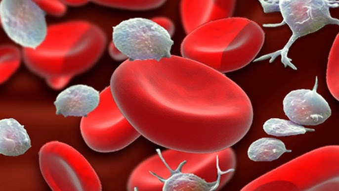

Conceptos clave
Que es la anemia
Conoce como afecta a la sangre, que papel cumple la hemoglobina y por que puede provocar cansancio, palidez y bajo rendimiento.
Leer masInformacion principal

Conceptos clave
Conoce como afecta a la sangre, que papel cumple la hemoglobina y por que puede provocar cansancio, palidez y bajo rendimiento.
Leer mas
Prevencion
Encuentra alimentos ricos en hierro y recetas sencillas con ingredientes, preparacion y espacio para video.
Ver recetasTest orientativo
Responde preguntas segun tu perfil y revisa si tus respuestas muestran senales que conviene conversar con un profesional de salud.
Explora NUTRIFE
Las formas mas frecuentes de anemia y sus diferencias.
Causas y sintomasSenales de alerta, factores de riesgo y sintomas comunes.
Diagnostico y testPasos para confirmar la anemia y un test orientativo por perfil.
AlimentosFuentes de hierro y consejos para mejorar su absorcion.
PrevencionHabitos diarios que ayudan a reducir el riesgo.
NoticiasActualizaciones y recomendaciones para la comunidad.